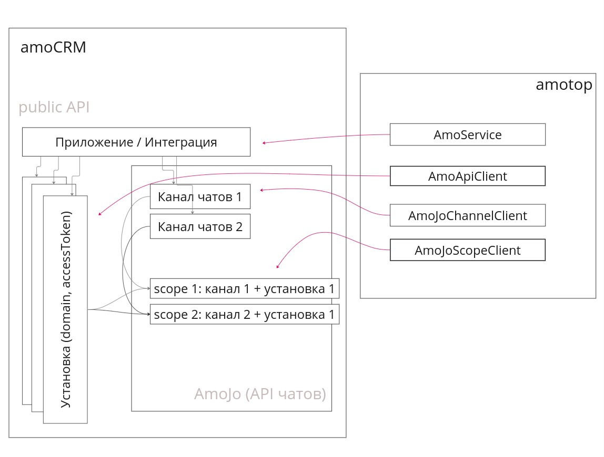

@mobilon-dev/amotop - еще один amoCRM API клиент для node.js
Простой клиент-обертка на API amoCRM, чтобы помочь коллеге быстро разобраться с концепцией amoCRM и начать приносить пользу.
Прост в понимании, легок в использовании
Логирует все запросы (request/responsе)
Работает с API чатов amoCRM
npm i @mobilon-dev/amotop
const {AmoJoScopeClient, AmoApiClient} = require('@mobilon-dev/amotop');
const {debug, scopeId, channelSecret, domain, accessToken} = require('../_config');
const amoJoScopeClient = new AmoJoScopeClient({scopeId, channelSecret, debug});
const amoApiClient = new AmoApiClient(domain, accessToken, {debug});
// получаем сделки
const leads = await amoApiClient.getLeads({limit: 20});
// отправляем сообщение в чат
const response = await amoJoScopeClient.sendMessage(message);
/*
логи
[AmoApiClient][Request] GET https://mobilonchatitest6.amocrm.ru/api/v4/leads?page=1&limit=20
[AmoApiClient][Response] GET https://mobilonchatitest6.amocrm.ru/api/v4/leads?page=1&limit=20 200:OK {"_page":1,"_links":{"self":{"href":"https://mobilonchatitest6.amocrm.ru/api/v4/leads?page=1&limit=20"}},"_embedded":{"leads":[{"id":4214965,"name":"Продать стул","price":10000,"responsible_user_id":886363,"group_id":0,"status_id":64831342,"pipeline_id":7883550,"loss_reason_id":null,"created_by":886363,"updated_by":886363,"created_at":1709609319,"updated_at":1709692894,"closed_at":null,"closest_task_at":null,"is_deleted":false,"custom_fields_values":null,"score":null,"account_id":31612010,"labor_cost":null,"_links":{"self":{"href":"https://mobilonchatitest6.amocrm.ru/api/v4/leads/4214965?page=1&limit=20"}},"_embedded":{"tags":[],"companies":[]}}]}}
*/
